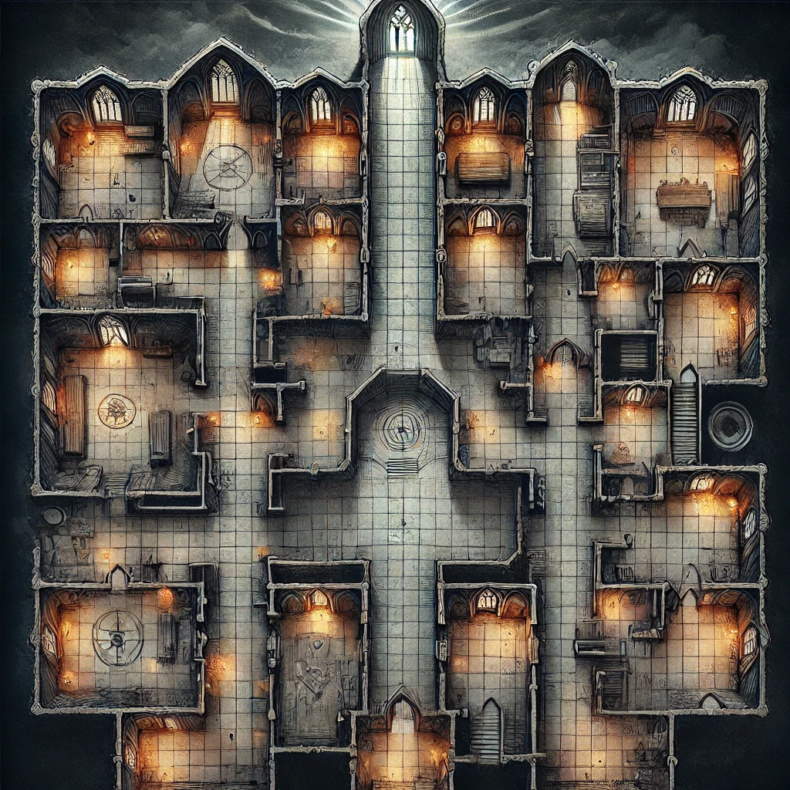

If I may begin from the end... I'm dead! I died in this monastery in 1901 and I need help. Someone killed me, but I don't know who it was. This portal has all the rooms from the monastery and a code to navigate through the rooms. Draw a map with all the rooms and connections between them. I will need your help to know the path to the father's office. I'm not the only one here...